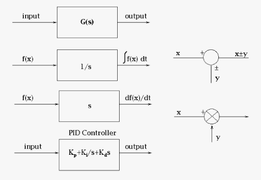
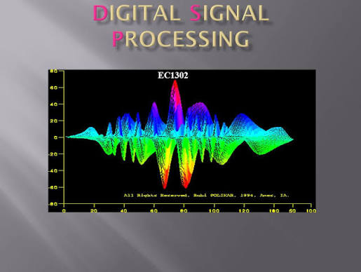
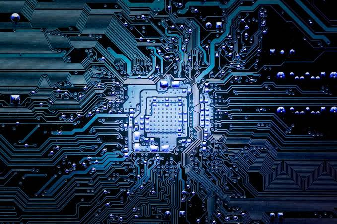

Signals and Systems
Notes on continuous- and discrete-time signals, LTI systems, convolution, Fourier analysis, Laplace and Z transforms, sampling, and correlation...

Digital Signal Processing
A place for notes on discrete-time signal analysis, sampling, DFT and FFT methods, spectral analysis, and digital filters...

Electronic Technology
Notes on analog and digital circuits, semiconductor devices, amplifiers, filters, signal processing, measurement systems, and practical electronic instruments...